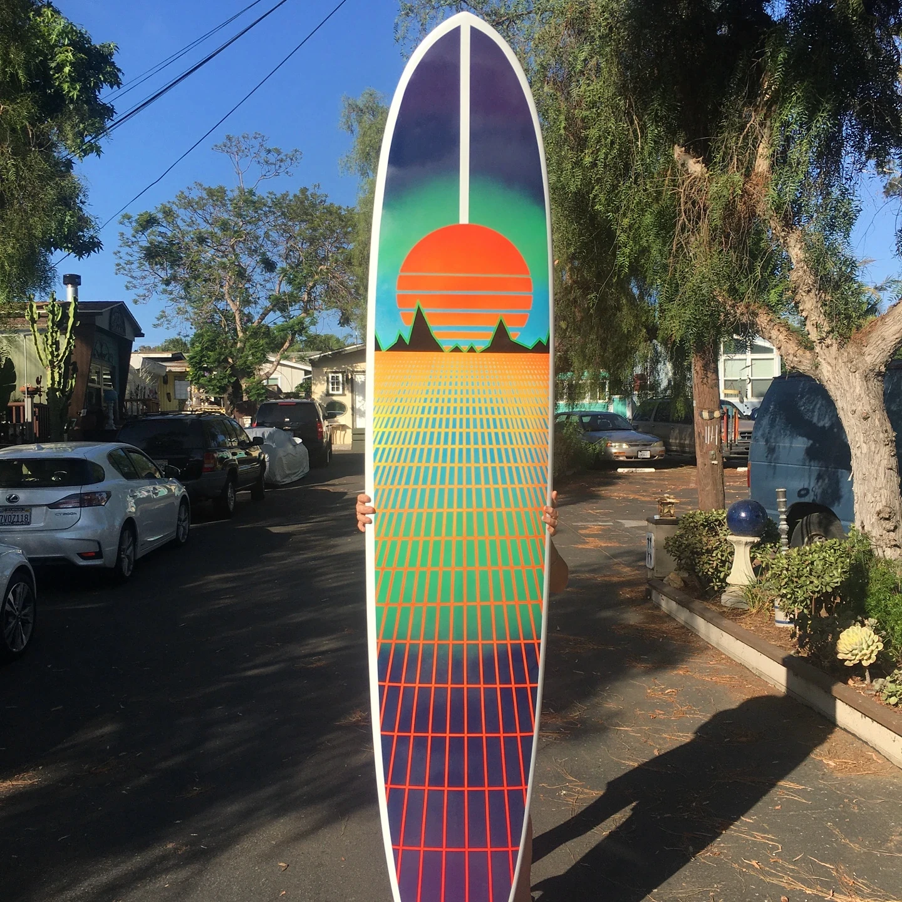
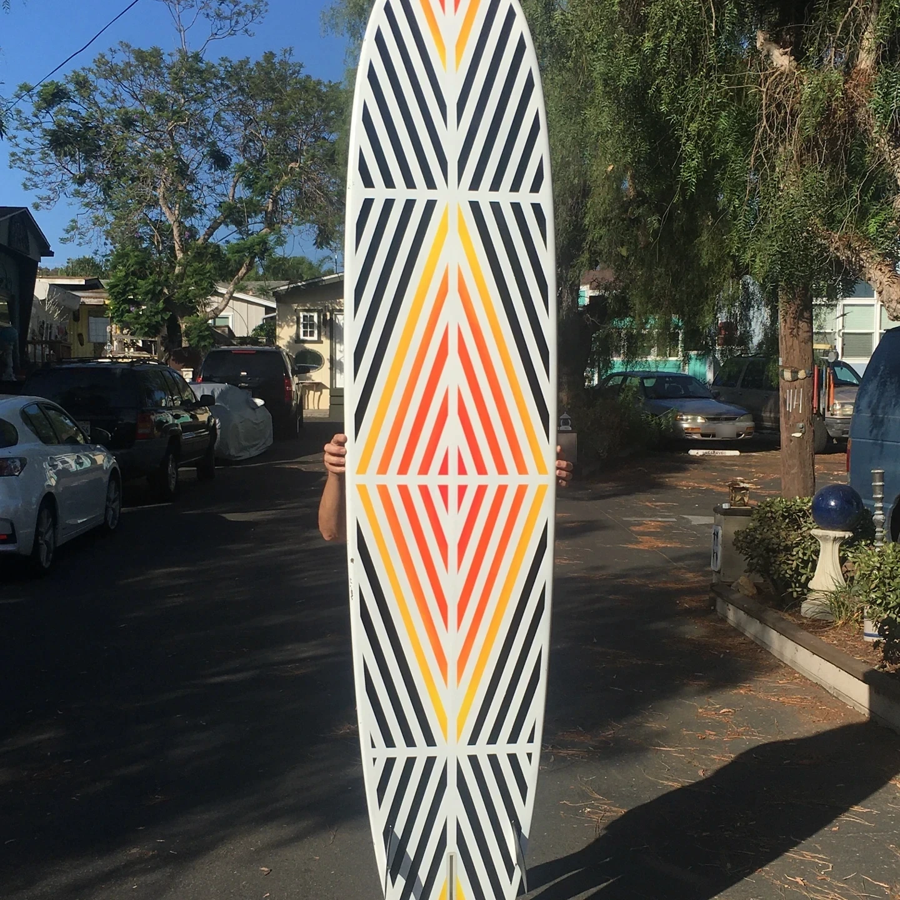
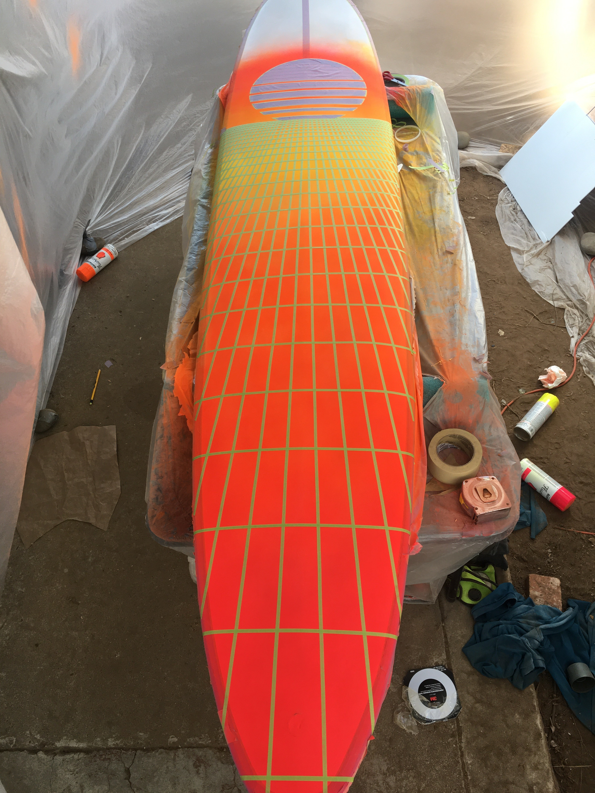
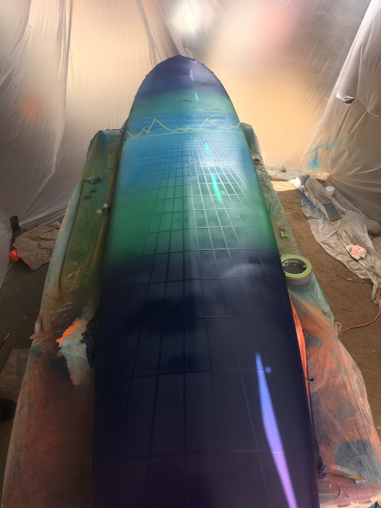
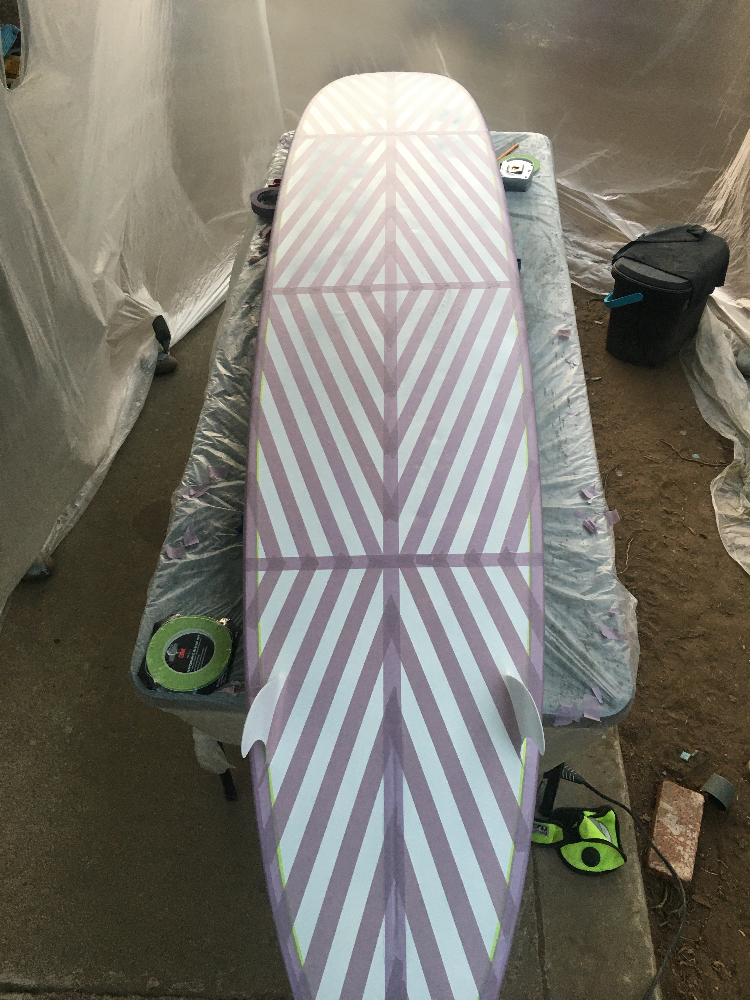
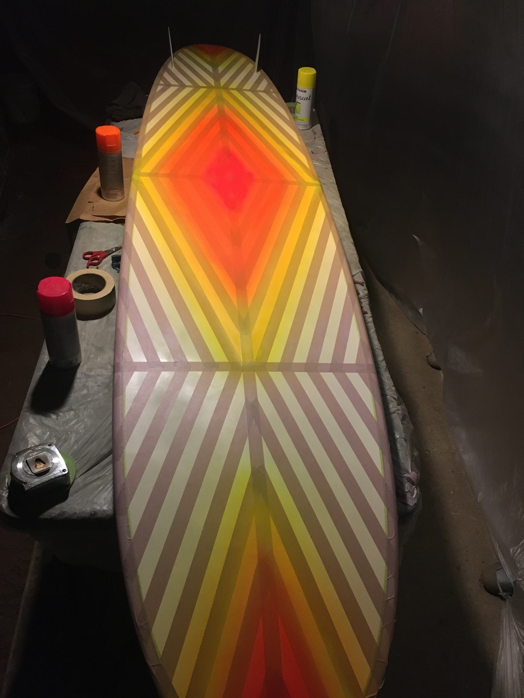
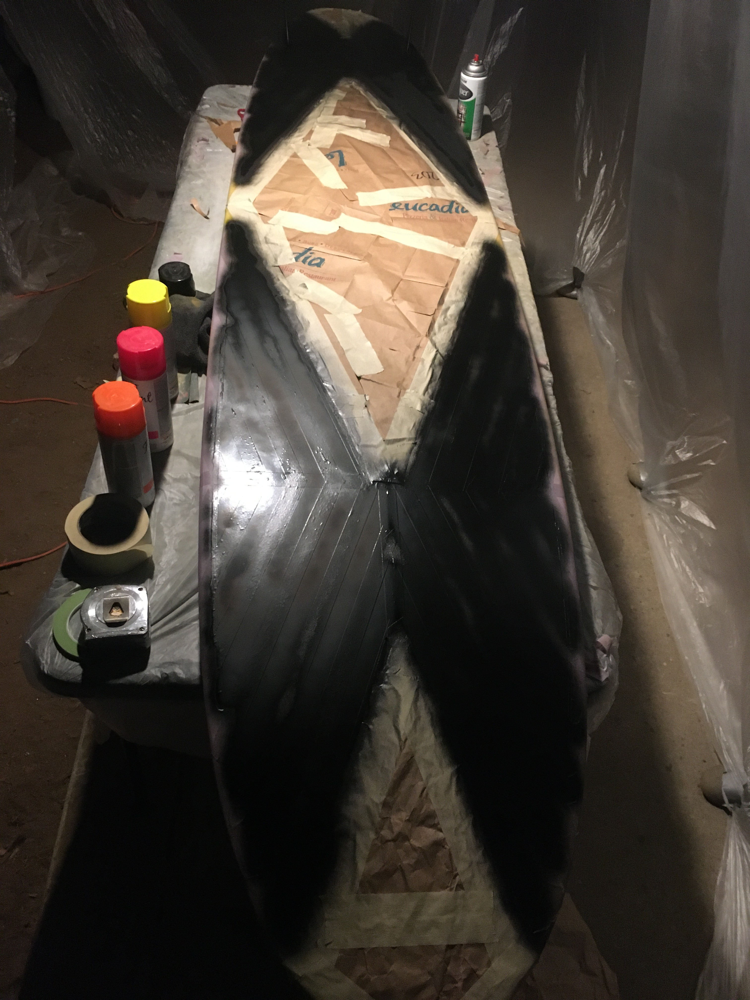

Surfboard Restoration and Custom Art
Restoring a family heirloom longboard with vibrant 80s-inspired artwork, blending craftsmanship with creativity.
Project Overview:
A cherished 9'0" tri-fin longboard, a long-standing family possession, was due for a restoration. While I've routinely handled ding repairs using fiberglass and resin, this project was an opportunity to combine functional restoration with a personal artistic expression, inspired by the vibrant aesthetics of 1980s vaporwave games.
Restoration and Design Preparation:
The restoration began with meticulous ding and crack repairs along the board's nose, edges, tail, and fin boxes. Preparing the board for painting involved sanding down the entire surface to ensure a smooth base, followed by a thorough cleaning with alcohol to remove any residues that could interfere with paint adhesion.
Artistic Process:
Color Foundation:
I started with a gradient base layer, blending colors from red at the tail, transitioning through orange to yellow mid-board, symbolizing a vibrant sunset at the horizon.
The color scheme then inverted towards the nose, creating an illusion of depth and perspective.
Detailed Tape Work:
Utilizing 4mm automotive pinstriping tape, I crafted a grid pattern that appeared to converge towards the horizon, enhancing the board's three-dimensional visual effect.
I carefully taped off the sun and horizon, using gaps in the tape to create the impression of the sun setting below the horizon.
Scene Creation:
The top portion of the board featured a fade from dark blue into green and purple, depicting the sea transitioning into the night sky.
I added taped silhouettes of mountains along the horizon line, filled with sharp green to stand out against the darker backdrop.
Framing and Underbelly Design:
A white frame was painted around the perimeter of the artwork to define and highlight the visual field.
The underside of the board received a gradient from yellow to orange, interspersed with black and white stripes, a pattern known to deter sharks.
Finishing Touches:
After removing all the tape, the surfboard revealed a stunning retro-themed artwork. Several layers of clear coat were applied, interspersed with rounds of wet sanding, to achieve a high-gloss finish that both protects and enhances the vivid colors and intricate details of the artwork.
Conclusion:
This surfboard restoration not only revitalized a valued family item but also transformed it into a piece of art that encapsulates personal memories and creative passions. It remains a prized possession that combines functionality with unique aesthetic appeal, capturing the essence of surfing both as a sport and a form of artistic expression.






